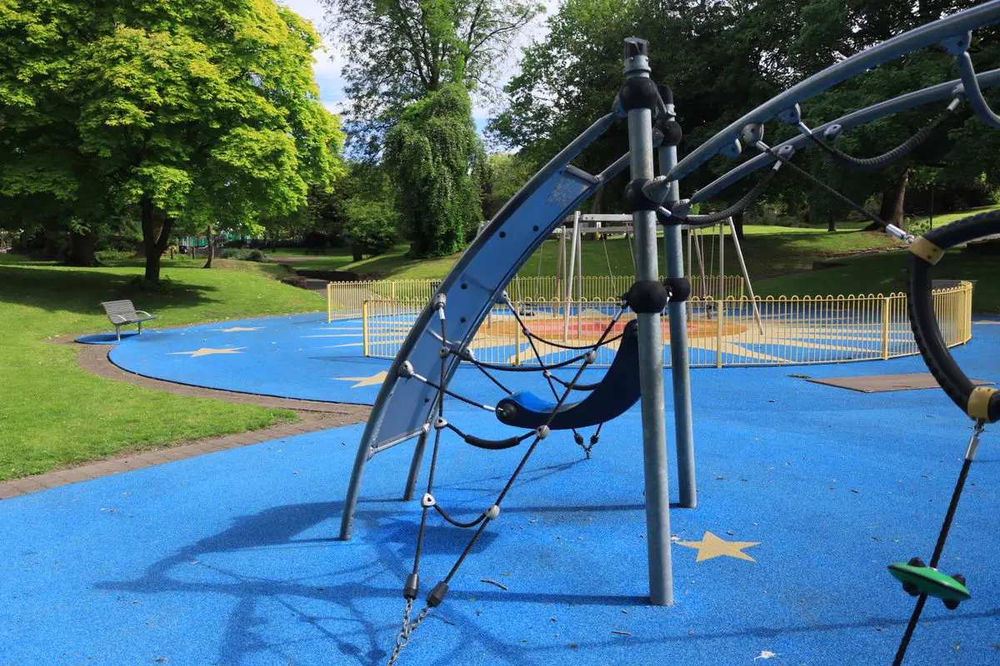

O playground é área comum, e a responsabilidade é do condomínio
Quando uma criança se machuca num brinquedo solto ou cai sobre piso duro, a primeira pergunta é quem instalou e quem mantém. No condomínio, essa conta chega ao síndico. Por isso o playground precisa ser tratado como obra em área comum, com projeto, responsável técnico e documento de entrega.
A referência técnica é a ABNT NBR 16071, que trata de segurança em brinquedos de playground, incluindo instalação, área de queda e inspeção. Entregamos o conjunto com laudo de entrega e ART registrada no CREA-ES, para arquivar junto da documentação do prédio.
Esta página trata de condomínios. Para escola, creche e clube, veja instalação de playground em Vitória. Se o playground já existe e você precisa só do documento, veja o laudo de playground com ART.
O que o síndico precisa resolver antes de comprar
Onde o playground cabe de verdade
Cada brinquedo pede uma área de queda livre em volta dele, e essas áreas não podem se sobrepor nem encostar em muro, banco ou canteiro. É comum o conjunto comprado por catálogo não caber no espaço reservado. Medimos antes da compra, quando o erro ainda sai barato.
Distância de piscina, garagem e circulação
Criança correndo sai do brinquedo sem olhar. O layout considera acesso de veículos, portão, escada e borda de piscina, além de sombra nas horas de uso e de como a água da chuva escoa.
Cobertura, laje e impermeabilização
Muitos prédios na região têm a área de lazer sobre a garagem. Nesse caso, a fixação não pode perfurar a manta de impermeabilização, e o peso do conjunto precisa ser conferido contra a capacidade da laje. Quando a laje limita, usamos solução sem chumbamento profundo ou mudamos o local.
Aprovação em assembleia
Levamos layout, lista de itens e orçamento discriminado em linguagem que o morador entende. Quando o conjunto antigo será removido, a retirada e o descarte entram na proposta.

Como é a instalação no condomínio
Visita e medição
Área disponível, piso existente, drenagem, acessos e o que está em volta.
Layout e proposta
Desenho com áreas de queda e rotas de circulação, com orçamento para a assembleia.
Base e piso de segurança
Regularização com caimento e piso amortecedor na espessura da altura de queda.
Montagem e entrega
Chumbamento, aperto, sinalização, laudo de entrega com ART e plano de manutenção.
Durante a obra, isolamos a área e combinamos com a administração os horários de barulho e o acesso de material. Em condomínio ocupado, isso evita boa parte das reclamações.
Piso de segurança: o item que mais pesa na decisão
| Opção | Quando faz sentido | Atenção |
|---|---|---|
| Piso emborrachado | Uso intenso e limpeza fácil | Espessura definida pela altura de queda e base com caimento |
| Grama sintética com manta | Visual de jardim integrado à área de lazer | Precisa de manta amortecedora; sem ela, não amortece |
| Areia | Área térrea com orçamento curto | Reposição, limpeza frequente e cuidado com animais |
| Concreto ou intertravado | Não serve sob brinquedo | Piso duro na área de queda é o erro mais grave |
Maresia e manutenção depois da entrega
Em prédios próximos à orla de Vitória, Vila Velha e Serra, parafuso e base metálica corroem antes do esperado. Por isso a entrega inclui um checklist de rotina para o zelador e um plano de manutenção, que pode entrar no plano de manutenção predial do condomínio.
Perguntas frequentes
O condomínio pode ser responsabilizado por acidente no playground?
O condomínio responde pela conservação das áreas comuns, e cada caso é analisado pelas suas circunstâncias. Ter instalação conforme a NBR 16071, ART e registro de inspeções mostra que a área foi cuidada e reduz o risco de acidente.
Vocês instalam brinquedos que o condomínio já comprou?
Sim. Instalamos seguindo o manual do fabricante e conferimos antes se a área comporta as áreas de queda. Se não comportar, avisamos e propomos ajuste de layout antes de começar.
Dá para instalar playground sobre a laje da garagem?
Em muitos casos, sim, desde que a capacidade da laje seja conferida e a fixação preserve a impermeabilização. A solução é definida na visita técnica.
Quanto custa um playground para condomínio?
Depende da quantidade de brinquedos, da metragem e da espessura do piso, do estado da base e do acesso. Com fotos, medidas e a lista de brinquedos, enviamos uma proposta discriminada para a assembleia.
Precisa de laudo todo ano?
A NBR 16071 prevê inspeções periódicas e manutenção. Recomendamos checklist de rotina pelo zelador e um laudo anual com ART, que ajuda o síndico a comprovar o cuidado com a área.
Playground para condomínios na Grande Vitória
Atendemos condomínios residenciais em toda a região:
Vai levar o playground para a assembleia?
Mande fotos e medidas da área. Retornamos com o layout e a proposta discriminada.